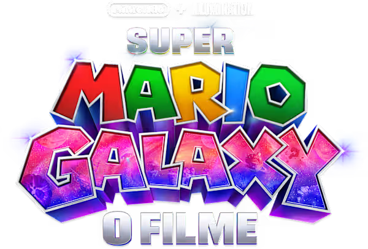
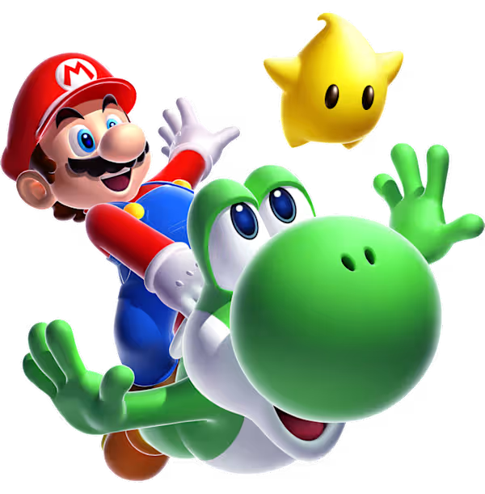

Prepare-se para uma aventura cósmica como você nunca viu. Em Super Mario Galaxy, Mario embarca em uma jornada épica através de planetas coloridos e mundos cheios de desafios. O teaser revela visuais deslumbrantes, ação eletrizante e a magia que fez do universo Mario um clássico eterno. Aventura, amizade e muitas surpresas aguardam enquanto Mario enfrenta Bowser e descobre segredos escondidos nas estrelas. Super Mario Galaxy – o universo inteiro está esperando por você.
